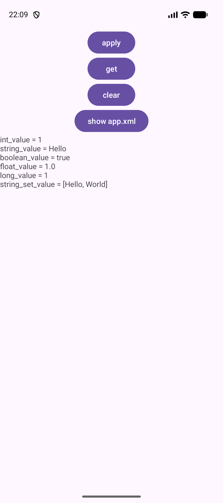
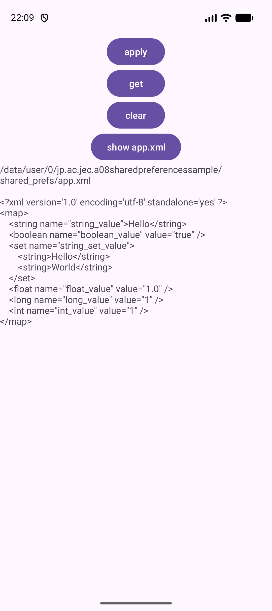
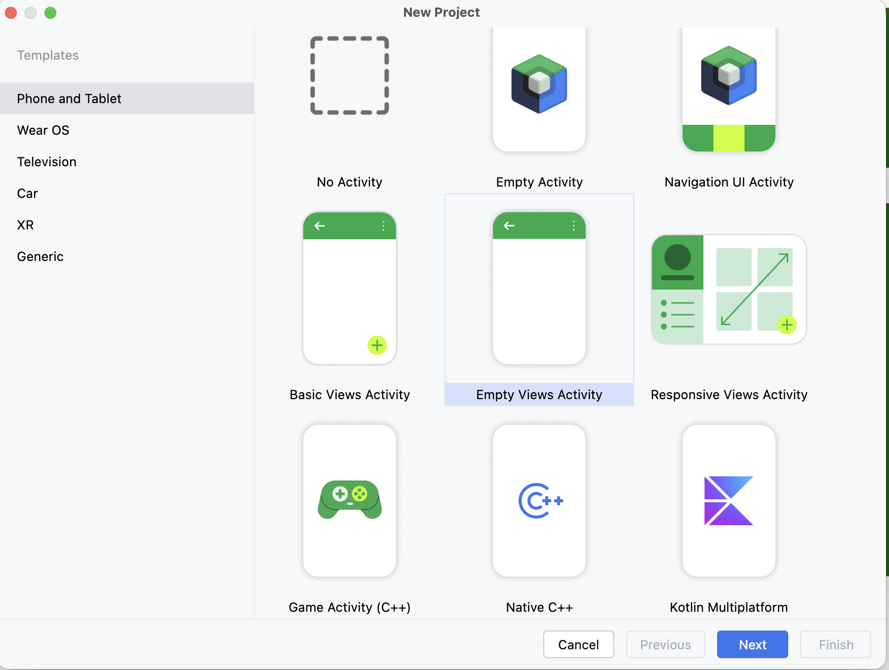
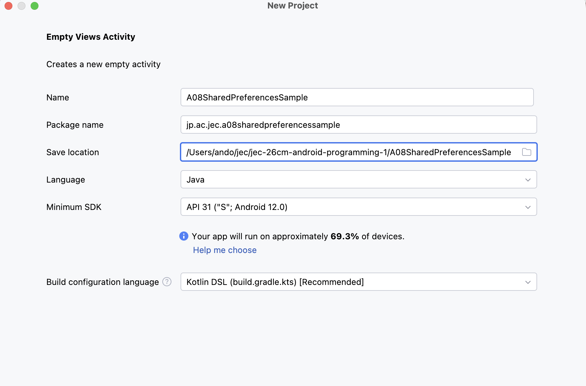
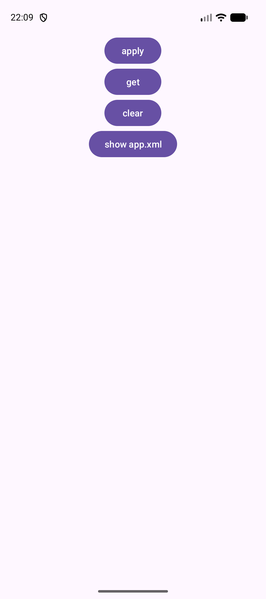
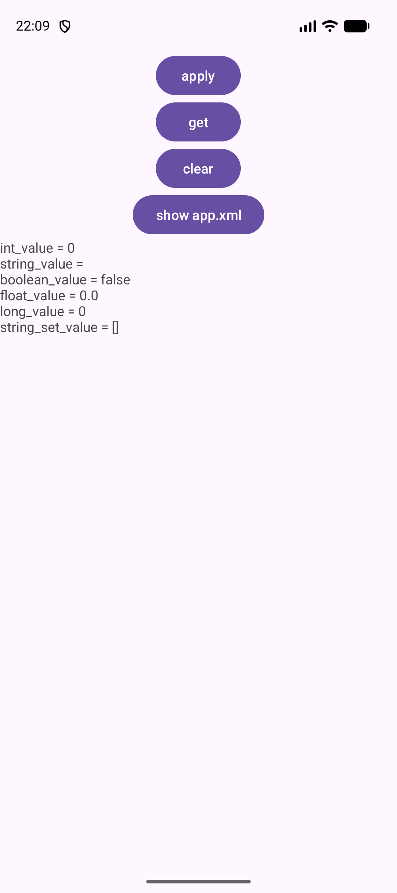
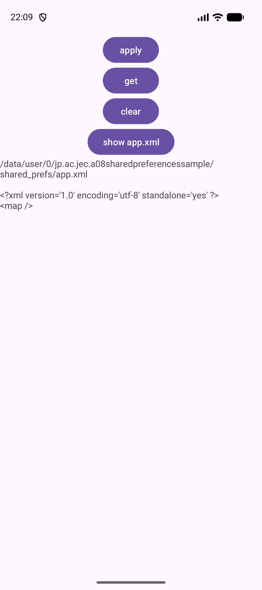

SHARED PREFERENCES SAMPLE
アプリを閉じても
消えないデータ
値を保存する。アプリを終了する。もう一度開くと、値が残っている。
保存先のファイルの中身まで、自分の目で確かめます。
今日のゴール
これまでの単元で作ったアプリは、終了すると入力した内容が消えていました。今回はアプリを終了しても消えないデータの保存を学びます。使うのは SharedPreferences です。
画面はボタン4つと表示欄だけです。ボタンを押すたびに、いま保存されている内容が表示欄に出ます。
{kind=link}

{kind=link}

できるようになること
- アプリを終了しても消えないデータを、
SharedPreferencesで保存できる。 - 保存されていないときに
getIntなどが返す初期値を説明できる。 - 保存したデータをまとめて消せる。
- データがどこに、どんな形で保存されているかを説明できる。
今日使う技術
| 技術 | どこで使うか |
|---|---|
getSharedPreferences | 保存先のファイル名を指定して、読み書きする入口を受け取る。 |
edit() と putInt ほか | 保存したい値を、キー（名前）を付けて書き込む。 |
apply() | 書き込みを確定する。これを呼ぶまで保存されない。 |
getInt ほか | キーを指定して読み出す。データがないときは初期値が返る。 |
clear() | 保存したデータをすべて消す。 |
画面回転について
各単元では画面回転時のデータ保持と横画面のレイアウトを扱いません。縦向きで使います。なお今回のデータは SharedPreferences に入っているので、回転してもアプリを終了しても残ります。消えるのは画面に表示していた文字だけで、保存したデータではありません。
ここで止まって、確認
できたらチェックします。困ったときはSTEP番号と画面を先生に見せましょう。
プロジェクトを作って実行
授業環境はMacと Android Studio Panda 2 | 2025.3.2 です。A07までとは別のプロジェクトを作ります。
毎回、自分で新規作成します
作る場所は Documents/Android1/A08SharedPreferencesSample です。完成プロジェクトは答え合わせ用で、授業の入力は自分で作ったプロジェクトに書きます。
- Android Studioの New Project をクリックします。別のプロジェクトを開いているときは File → New → New Project を選びます。
- Phone and Tablet → Empty Views Activity → Next の順に選びます。名前に Views があることを確認します。
{kind=link}

- 次の表のとおりに入力・選択して Finish を押します。
| 項目 | 入力・選択する内容 |
|---|---|
| Name | A08SharedPreferencesSample |
| Package name | jp.ac.jec.a08sharedpreferencessample（すべて小文字） |
| Save location | /Users/ユーザ名/Documents/Android1/A08SharedPreferencesSample |
| Language | Java |
| Minimum SDK | API 31 ("S"; Android 12.0) |
| Build configuration language | Kotlin DSL (build.gradle.kts) [Recommended] |
{kind=link}

- Sync（歯車の読み込み）が終わるまで待ちます。
- 端末欄で jec_26cm_android1_Pixel 9a を選び、Run（▶）を押します。白い画面に Hello World! が出れば成功です。
エミュレータが出てこないときは共通資料：エミュレータを見ます。
ここで止まって、確認
できたらチェックします。困ったときはSTEP番号と画面を先生に見せましょう。
画面を作る
ボタン4つと、結果を出す表示欄を並べます。app/src/main/res/layout/activity_main.xml を開き、中身をすべて次のコードに置き換えます。
<?xml version="1.0" encoding="utf-8"?>
<LinearLayout xmlns:android="http://schemas.android.com/apk/res/android"
xmlns:tools="http://schemas.android.com/tools"
android:id="@+id/main"
android:layout_width="match_parent"
android:layout_height="match_parent"
android:gravity="center_horizontal"
android:orientation="vertical"
tools:context=".MainActivity">
<Button
android:id="@+id/btn_apply"
android:layout_width="wrap_content"
android:layout_height="wrap_content"
android:text="apply" />
<Button
android:id="@+id/btn_get"
android:layout_width="wrap_content"
android:layout_height="wrap_content"
android:text="get" />
<Button
android:id="@+id/btn_clear"
android:layout_width="wrap_content"
android:layout_height="wrap_content"
android:text="clear" />
<Button
android:id="@+id/btn_xml"
android:layout_width="wrap_content"
android:layout_height="wrap_content"
android:text="show app.xml" />
<TextView
android:id="@+id/txt_output"
android:layout_width="match_parent"
android:layout_height="0dp"
android:layout_weight="1" />
</LinearLayout>書いた内容の意味
| 書いたところ | 意味 |
|---|---|
LinearLayout / orientation="vertical" | 中身を縦に並べる。ConstraintLayoutから書き換えている。 |
gravity="center_horizontal" | 中身を左右の中央に寄せる。上下には寄せない。 |
android:id="@+id/main" | 消しません。ひな形のJavaが findViewById(R.id.main) で使っています（A01と同じ）。 |
btn_apply / btn_get / btn_clear / btn_xml | Javaから見つけるための名前。STEP 05以降で1つずつ使う。 |
txt_output | 結果を出す表示欄。最初は空です。 |
layout_height="0dp" と layout_weight="1" | 表示欄が残りの高さを全部使うという指定。表示する文字が長くても短くても大きさが変わらないので、上のボタンの位置がずれません。 |
なぜ表示欄にweightを付けるのか
layout_height="wrap_content"（中身の分だけ）にすると、表示する文字が増えたときに表示欄が大きくなり、上のボタンが動いてしまいます。ボタンを何度も押す教材なので、押す場所が変わらないようにしています。
文字を直接書いたことによる Hardcoded text の警告は、これまでの単元と同様にそのまま進めます。
Runで確かめる
apply・get・clear・show app.xmlの4つのボタンが画面の上に縦に並べば成功です。押しても、まだ何も起きません。
{kind=link}

ここで止まって、確認
できたらチェックします。困ったときはSTEP番号と画面を先生に見せましょう。
SharedPreferencesを用意する
MainActivity.java を開きます。まず、保存に使う名前を定数にまとめ、読み書きの入口を受け取ります。
① クラスの先頭に定数とフィールドを追加する
public class MainActivity extends AppCompatActivity { のすぐ下に書きます。
private static final String FILE_NAME = "app";
private static final String INT_VALUE = "int_value";
private static final String BOOLEAN_VALUE = "boolean_value";
private static final String FLOAT_VALUE = "float_value";
private static final String LONG_VALUE = "long_value";
private static final String STRING_VALUE = "string_value";
private static final String STRING_SET_VALUE = "string_set_value";
private SharedPreferences prefs;② onCreateの最後に1行追加する
// ファイル名を指定して、SharedPreferencesを取得する.
prefs = getSharedPreferences(FILE_NAME, MODE_PRIVATE);SharedPreferences が赤いときは ⌥ Enter で android.content.SharedPreferences を選びます（共通資料：Auto Import）。
書いた内容の意味
| 書いたところ | 意味 |
|---|---|
FILE_NAME = "app" | 保存先のファイル名。このあと app.xml というファイルができます。 |
INT_VALUE = "int_value" など6つ | 値に付ける名前（キー）。保存するときと読み出すときに同じものを使います。 |
private static final String | キーの文字を1か所にまとめる書き方。打ち間違えを防げます（STEP 09の練習3で確かめます）。 |
MODE_PRIVATE | このアプリだけが読み書きできる、という指定。ほかのアプリからは見えません。 |
prefs | 読み書きの入口。onCreateの外のメソッドからも使うので、フィールドにしています。 |
キーは自由に決めてよい？
キーの文字は自分で決められます。ただし保存したときと読み出すときで同じでなければ、値は見つかりません。この教材では値の種類がわかる名前（int_value など）にしています。
Runで確かめる
画面の見た目は変わりません。赤いエラーが出ずにRunできれば成功です。
ここで止まって、確認
できたらチェックします。困ったときはSTEP番号と画面を先生に見せましょう。
保存されている値を画面に出す
まだ何も保存していません。その状態で読み出すと何が返るのかを、先に確かめます。
① 読み出してまとめるメソッドを追加する
onCreate の最後の } の下、クラスの最後の } の上に書きます。onCreateの中ではありません。
/**
* 保存されているデータをまとめて1つの文字列にする.
* データがない場合は、getXxx()の第2引数に渡した初期値が返る.
*/
private String currentValues() {
return INT_VALUE + " = " + prefs.getInt(INT_VALUE, 0) + "\n"
+ STRING_VALUE + " = " + prefs.getString(STRING_VALUE, "") + "\n"
+ BOOLEAN_VALUE + " = " + prefs.getBoolean(BOOLEAN_VALUE, false) + "\n"
+ FLOAT_VALUE + " = " + prefs.getFloat(FLOAT_VALUE, 0) + "\n"
+ LONG_VALUE + " = " + prefs.getLong(LONG_VALUE, 0) + "\n"
+ STRING_SET_VALUE + " = " + prefs.getStringSet(STRING_SET_VALUE, Set.of());
}Set が赤いときは ⌥ Enter で java.util.Set を選びます。
② onCreateで表示欄に出す
prefs = getSharedPreferences(...) の行の上に表示欄を受け取る行を、下に表示する行を追加します。
var txtOutput = (TextView) findViewById(R.id.txt_output);
// ファイル名を指定して、SharedPreferencesを取得する.
prefs = getSharedPreferences(FILE_NAME, MODE_PRIVATE);
// 保存されているデータを表示する.
// アプリを終了してから開き直しても、データが残っていることを確認できる.
txtOutput.setText(currentValues());getXxxの第2引数は「初期値」
prefs.getInt(INT_VALUE, 0) の 0 は、そのキーのデータが保存されていないときに返る値です。種類ごとに、教材では次の初期値を渡しています。
| メソッド | 渡した初期値 | データがないときの表示 |
|---|---|---|
getInt | 0 | int_value = 0 |
getString | ""（空の文字） | string_value = （右側が空） |
getBoolean | false | boolean_value = false |
getFloat | 0 | float_value = 0.0 |
getLong | 0 | long_value = 0 |
getStringSet | Set.of()（空の集まり） | string_set_value = [] |
初期値は自分で決められます。STEP 09の練習2で変えてみます。
Runで確かめる
起動しただけで、6行が表示されれば成功です。まだ保存していないので、すべて初期値です。
{kind=link}

ここで止まって、確認
できたらチェックします。困ったときはSTEP番号と画面を先生に見せましょう。
データを保存する
applyボタンに、6種類の値を保存する処理を書きます。txtOutput.setText(currentValues()); の下に追加します。
findViewById(R.id.btn_apply).setOnClickListener(v -> {
// データを保存するときは、edit()でEditorを取得する.
var editor = prefs.edit();
editor.putInt(INT_VALUE, 1);
editor.putString(STRING_VALUE, "Hello");
editor.putBoolean(BOOLEAN_VALUE, true);
editor.putFloat(FLOAT_VALUE, 1.0f);
editor.putLong(LONG_VALUE, 1L);
editor.putStringSet(STRING_SET_VALUE, Set.of("Hello", "World"));
// apply()を呼ぶまでは保存されない. 戻り値で成功したかどうかが分からない.
editor.apply();
txtOutput.setText(currentValues());
});保存の3ステップ
| 順番 | 書くこと | 意味 |
|---|---|---|
| 1 | prefs.edit() | 書き込み用の Editor を受け取る。読み出しと違い、保存には必ず必要。 |
| 2 | putInt / putString ほか | キーと値の組を、種類に合ったメソッドで書き込む。この時点ではまだ保存されていない。 |
| 3 | apply() | ここで確定する。忘れると何も保存されない。 |
値の種類ごとにメソッドが分かれています。1.0f の f、1L の L は、floatとlongであることを表す印です。
解説：applyとcommitの違い
保存を確定するメソッドは2つあります。
apply() | commit() | |
|---|---|---|
| 戻り値 | なし | boolean（成功したかどうか） |
| ファイルへの書き込み | 別の処理にまかせる（呼び出しはすぐ終わる） | 書き終わるまで待つ |
| ふだん使うのは | こちら | 保存できたかどうかを、その場で確かめたいときだけ |
どちらを使っても、画面に出る結果は同じです。apply() でも、書き込みはこの直後に別の処理が引き受けているので、値がなくなることはありません。この教材では apply() を使います。
Runで確かめる
applyを押すと、6行の値が変わります。
string_set_value が [World, Hello] のように逆の順で出ることがあります。Set は順番を約束しない入れ物なので、どちらでも正解です。
ここで止まって、確認
できたらチェックします。困ったときはSTEP番号と画面を先生に見せましょう。
アプリを終了しても残ることを確かめる
ここが今回のいちばん大事なところです。まず、読み出すだけのボタンを追加します。
① getボタンの処理を追加する
applyの処理（}); まで）の下に追加します。
findViewById(R.id.btn_get).setOnClickListener(v -> txtOutput.setText(currentValues()));読み出しだけなので edit() は要りません。処理が1つだけなので { } を書かずに1行で済ませています。
② アプリを完全に終了して、開き直す
- applyを押して、値が保存された状態にします。
- エミュレータでアプリ一覧（最近使ったアプリ）を開き、このアプリを上へスワイプして終了します。画面下の横棒を上へスワイプしてから止めると出ます。
- もう一度アプリのアイコンから起動します。
起動した時点で、applyで保存した値がそのまま表示されていれば成功です。getを押しても同じ値が出ます。
なぜ残るのか
apply() のときに、値が端末の中のファイルに書き込まれたからです。アプリを終了してもファイルは消えません。次に起動したとき、getInt などがそのファイルから読み出しています。そのファイルはSTEP 08で実際に見ます。
これまでの単元との違い
A02の得点やA07の参加者一覧は、アプリを終了すると消えていました。あれはメモリの上にだけあったからです。今回はファイルに書いているので、終了しても、端末を再起動しても残ります。
Runで確かめる
終了 → 起動を2回くり返して、毎回同じ値が出ることを確かめます。
ここで止まって、確認
できたらチェックします。困ったときはSTEP番号と画面を先生に見せましょう。
データを全部消す
保存したデータを消す処理を、clearボタンに書きます。getの行の下に追加します。
findViewById(R.id.btn_clear).setOnClickListener(v -> {
// clear()は、保存されているデータをすべて削除する.
var edit = prefs.edit();
edit.clear();
edit.apply();
txtOutput.setText(currentValues());
});消すときも edit() → 操作 → apply() の3ステップは同じです。clear() を呼んだだけでは消えません。
Runで確かめる
- applyを押して、値が入った状態にします。
- clearを押します。6行がすべて初期値に戻れば成功です（STEP 04と同じ表示）。
- もう一度applyを押すと、また値が入ります。
「消えた」と「初期値」は違う
画面に int_value = 0 と出ていても、それは「0が保存されている」のではなく「何も保存されていないので初期値の0が返った」という意味です。この2つは画面では見分けられません。STEP 08でファイルを見ると、はっきり違いがわかります。
ここで止まって、確認
できたらチェックします。困ったときはSTEP番号と画面を先生に見せましょう。
保存先のXMLファイルを見る
データは端末の中のファイルに入っています。そのファイルを読んで、画面に出します。
① ファイルを読むメソッドを追加する
currentValues() の下、クラスの最後の } の上に書きます。
/**
* SharedPreferencesの実体であるXMLファイルを読み込んで返す.
* 自分のアプリのデータなので、特別な権限なしで読める.
*/
private String readPrefsXml() {
var file = new File(getApplicationInfo().dataDir, "shared_prefs/" + FILE_NAME + ".xml");
if (!file.exists()) {
return file.getAbsolutePath() + "\n\n(file not found)";
}
try {
return file.getAbsolutePath() + "\n\n"
+ new String(Files.readAllBytes(file.toPath()), StandardCharsets.UTF_8);
} catch (IOException e) {
return "read error: " + e;
}
}File・Files・StandardCharsets・IOException が赤いときは ⌥ Enter で java.io.File、java.nio.file.Files、java.nio.charset.StandardCharsets、java.io.IOException を選びます。
② show app.xmlボタンの処理を追加する
clearの処理（}); まで）の下に追加します。これでonCreateは完成です。
findViewById(R.id.btn_xml).setOnClickListener(v -> {
txtOutput.setText(readPrefsXml());
});Runで確かめる
- applyを押します。
- show app.xmlを押します。ファイルの場所と、中身のXMLが表示されます。
読み取れること
| 画面に出たもの | 意味 |
|---|---|
/data/user/0/jp.ac.jec.a08sharedpreferencessample/ | このアプリ専用の場所。ほかのアプリからは読めません。 |
shared_prefs/app.xml | FILE_NAME = "app" と書いたので app.xml になっています。 |
<int name="int_value" value="1" /> | キーがname、値がvalue。種類ごとにタグ名が違います（int / long / float / boolean / string / set）。 |
<set> の中の <string> が2つ | Set.of("Hello", "World") の2つが入っています。 |
clearするとどうなるか
- clearを押します。
- もう一度show app.xmlを押します。
{kind=link}

<map /> だけになりました。ファイルそのものは消えず、中身が空になることがわかります。STEP 07で見た「消えた」と「初期値」の違いが、ここではっきりします。
解説：何を保存してよいか
SharedPreferences は小さくて単純な設定のための入れ物です。
| 向いているもの | 向いていないもの |
|---|---|
| 音量やダークモードの設定、最後に開いたタブ、チュートリアルを見たかどうか | 写真や動画（大きすぎる） |
| ログイン中かどうかの目印 | 何百件もの記録（一覧や検索にはデータベースを使う） |
| ゲームのハイスコア | パスワードやクレジットカード番号 |
パスワードを入れてはいけない理由
いま見たとおり、中身はただのXMLファイルです。暗号化されていません。ふつうの端末ではほかのアプリから読めませんが、それでも大事な情報を平文で置く場所ではありません。
ここで止まって、確認
できたらチェックします。困ったときはSTEP番号と画面を先生に見せましょう。
ミニ練習
まずSTEP 08まで完成させます。そのあと、次の小変更を1つずつ試します。予想 → 変更 → Run → 説明 → 元に戻すの順で行います。
練習1：保存する値を変える
applyの処理の2行を、次のように変えます。
editor.putInt(INT_VALUE, 100);
editor.putString(STRING_VALUE, "Android");applyを押したあと、show app.xmlを押すと、XMLのどこが変わるでしょうか。予想してから試します。
試したあとに答えを見る
<int name="int_value" value="100" /> と <string name="string_value">Android</string> の2つが変わり、ほかの4つは同じです。キーは変えていないので、同じ名前の値が上書きされます。確認後は 1 と "Hello" に戻します。
練習2：初期値を変える
currentValues() の1行目を、次のように変えます（第2引数が -1 です）。
return INT_VALUE + " = " + prefs.getInt(INT_VALUE, -1) + "\n"clearを押したあと、int_value は何と表示されるでしょうか。applyを押したあとはどうでしょうか。予想してから試します。
試したあとに答えを見る
clearのあとは int_value = -1、applyのあとは int_value = 1 です。初期値はデータがないときだけ使われ、保存されていればその値が返ります。「0だから保存されていない」とは限らないこと、逆に「0が保存されている」こともあることを説明できれば十分です。確認後は 0 に戻します。
練習3：キーを直接書いて、打ち間違える
currentValues() の1行目を、さらに次のように変えます（_ がありません）。
return INT_VALUE + " = " + prefs.getInt("intvalue", 0) + "\n"赤いエラーは出るでしょうか。applyを押したあと、int_value は何と表示されるでしょうか。予想してから試します。
試したあとに答えを見る
赤いエラーは出ません。applyを押しても int_value = 0 のままです。保存したキーは "int_value"、探したキーは "intvalue" で、見つからないため初期値の0が返るからです。show app.xmlを押すと <int name="int_value" value="1" /> はちゃんとあります。定数名を INT_VALU のように打ち間違えた場合は、すぐ赤いエラーになります。キーを定数にまとめる理由を説明できれば十分です。確認後は INT_VALUE に戻します。
ここで止まって、確認
できたらチェックします。困ったときはSTEP番号と画面を先生に見せましょう。
完成
完成チェック
| 操作 | 確認する結果 |
|---|---|
| アプリを消してから初回起動 | 6行が初期値（0 / 空 / false / 0.0 / 0 / []）で表示される。 |
| apply | 6行が 1 / Hello / true / 1.0 / 1 / [Hello, World] に変わる。 |
| get | applyのあとと同じ6行が出る。 |
| アプリを終了して開き直す | 起動しただけで、applyで保存した値が出る。 |
| show app.xml | パスと、6つのタグが入ったXMLが出る。 |
| clear | 6行が初期値に戻る。 |
| clearのあとにshow app.xml | <map /> だけになる。 |
保存
自分の Documents/Android1/A08SharedPreferencesSample を保存します。
教材のチェックは自分用です。先生への送信はしません。印刷は ⌘ P で行えます。
ここで止まって、確認
できたらチェックします。困ったときはSTEP番号と画面を先生に見せましょう。
困ったとき
| 困ったこと | 最初に確認する場所 |
|---|---|
SharedPreferences が赤い | ⌥ Enter で android.content.SharedPreferences を選ぶ。 |
Set、File、Files、StandardCharsets、IOException、TextView が赤い | ⌥ Enter で java.util.Set、java.io.File、java.nio.file.Files、java.nio.charset.StandardCharsets、java.io.IOException、android.widget.TextView を選ぶ。 |
R.id.btn_apply などが赤い | activity_main.xmlのidが btn_apply / btn_get / btn_clear / btn_xml / txt_output か確認。android:id="@+id/main" を消していないかも見る。 |
currentValues() や readPrefsXml() を追加したら、赤いエラーがたくさん出る | onCreateの中に入れていないか確認。onCreateの最後の } の下、クラスの最後の } の上に置く。 |
prefs が赤い、またはnullでアプリが終了する | STEP 03の prefs = getSharedPreferences(FILE_NAME, MODE_PRIVATE); を書いたか、txtOutput.setText(currentValues()); より上にあるか確認する。 |
txtOutput が赤い（applyなどの中） | var txtOutput = (TextView) findViewById(R.id.txt_output); をonCreateの中に書いたか確認する。 |
| ボタンを押しても何も起きない | そのボタンの処理を追加したか、R.id の名前を取り違えていないか確認する。 |
| applyを押しても値が変わらない | editor.apply(); を書いたか確認する。putだけでは保存されない。 |
| アプリを終了すると値が消える | アプリのデータを消していないか確認する（設定 → アプリ → ストレージを消去）。エミュレータを作り直した場合も消える。 |
show app.xmlで (file not found) と出る | まだ一度もapplyしていない状態。applyを押してから、もう一度show app.xmlを押す。 |
clearしたのに int_value = 0 と出る | 正常です。データが消えたので、初期値の0が返っています（STEP 07）。 |
string_set_value の並びが画像と違う | 正常です。Set は順番を約束しません。 |
| 表示欄の文字が画面の下からはみ出す | activity_main.xmlの txt_output が layout_height="0dp" と layout_weight="1" になっているか確認する。 |
| ボタンを押すたびにボタンの位置が動く | 同上。wrap_content のままだと、表示する文字の量で位置が変わる。 |
| 直したのに動きが変わらない | ウィンドウの保存先が Documents/Android1/A08SharedPreferencesSample か確認する。samples側を開いていないか見る。 |
質問では「STEP番号・編集したファイル・最初の赤い行・押した順番」を伝えます。
完成プロジェクトを開く
完成版は最初の授業から使える見本です。完成プロジェクト A08SharedPreferencesSample.zip
- ZIPを展開します。中に
A08SharedPreferencesSampleフォルダができます。 - 見本は
/Users/ユーザ名/Documents/Android1/samples/A08SharedPreferencesSampleに置きます。 - Android Studioの Open で、
settings.gradle.ktsとappが入ったA08SharedPreferencesSampleフォルダを選びます。 - Sync後にRunして動きを確認します。授業の入力に戻るときは自分の
Documents/Android1/A08SharedPreferencesSampleを開きます。
両方とも同じプロジェクト名なので、ウィンドウの保存先を確認しましょう。見本と自分のアプリは同じパッケージ名のため、端末上では同じアプリを更新します。保存したデータも共有されます。切り替えるときは、確認したい方のプロジェクトからRunします。
完成したMainActivity.javaで照合する
package jp.ac.jec.a08sharedpreferencessample;
import android.content.SharedPreferences;
import android.os.Bundle;
import android.widget.TextView;
import androidx.activity.EdgeToEdge;
import androidx.appcompat.app.AppCompatActivity;
import androidx.core.graphics.Insets;
import androidx.core.view.ViewCompat;
import androidx.core.view.WindowInsetsCompat;
import java.io.File;
import java.io.IOException;
import java.nio.charset.StandardCharsets;
import java.nio.file.Files;
import java.util.Set;
public class MainActivity extends AppCompatActivity {
private static final String FILE_NAME = "app";
private static final String INT_VALUE = "int_value";
private static final String BOOLEAN_VALUE = "boolean_value";
private static final String FLOAT_VALUE = "float_value";
private static final String LONG_VALUE = "long_value";
private static final String STRING_VALUE = "string_value";
private static final String STRING_SET_VALUE = "string_set_value";
private SharedPreferences prefs;
@Override
protected void onCreate(Bundle savedInstanceState) {
super.onCreate(savedInstanceState);
EdgeToEdge.enable(this);
setContentView(R.layout.activity_main);
ViewCompat.setOnApplyWindowInsetsListener(findViewById(R.id.main), (v, insets) -> {
Insets systemBars = insets.getInsets(WindowInsetsCompat.Type.systemBars());
v.setPadding(systemBars.left, systemBars.top, systemBars.right, systemBars.bottom);
return insets;
});
var txtOutput = (TextView) findViewById(R.id.txt_output);
// ファイル名を指定して、SharedPreferencesを取得する.
prefs = getSharedPreferences(FILE_NAME, MODE_PRIVATE);
// 保存されているデータを表示する.
// アプリを終了してから開き直しても、データが残っていることを確認できる.
txtOutput.setText(currentValues());
findViewById(R.id.btn_apply).setOnClickListener(v -> {
// データを保存するときは、edit()でEditorを取得する.
var editor = prefs.edit();
editor.putInt(INT_VALUE, 1);
editor.putString(STRING_VALUE, "Hello");
editor.putBoolean(BOOLEAN_VALUE, true);
editor.putFloat(FLOAT_VALUE, 1.0f);
editor.putLong(LONG_VALUE, 1L);
editor.putStringSet(STRING_SET_VALUE, Set.of("Hello", "World"));
// apply()を呼ぶまでは保存されない. 戻り値で成功したかどうかが分からない.
editor.apply();
txtOutput.setText(currentValues());
});
findViewById(R.id.btn_get).setOnClickListener(v -> txtOutput.setText(currentValues()));
findViewById(R.id.btn_clear).setOnClickListener(v -> {
// clear()は、保存されているデータをすべて削除する.
var edit = prefs.edit();
edit.clear();
edit.apply();
txtOutput.setText(currentValues());
});
findViewById(R.id.btn_xml).setOnClickListener(v -> {
txtOutput.setText(readPrefsXml());
});
}
/**
* 保存されているデータをまとめて1つの文字列にする.
* データがない場合は、getXxx()の第2引数に渡した初期値が返る.
*/
private String currentValues() {
return INT_VALUE + " = " + prefs.getInt(INT_VALUE, 0) + "\n"
+ STRING_VALUE + " = " + prefs.getString(STRING_VALUE, "") + "\n"
+ BOOLEAN_VALUE + " = " + prefs.getBoolean(BOOLEAN_VALUE, false) + "\n"
+ FLOAT_VALUE + " = " + prefs.getFloat(FLOAT_VALUE, 0) + "\n"
+ LONG_VALUE + " = " + prefs.getLong(LONG_VALUE, 0) + "\n"
+ STRING_SET_VALUE + " = " + prefs.getStringSet(STRING_SET_VALUE, Set.of());
}
/**
* SharedPreferencesの実体であるXMLファイルを読み込んで返す.
* 自分のアプリのデータなので、特別な権限なしで読める.
*/
private String readPrefsXml() {
var file = new File(getApplicationInfo().dataDir, "shared_prefs/" + FILE_NAME + ".xml");
if (!file.exists()) {
return file.getAbsolutePath() + "\n\n(file not found)";
}
try {
return file.getAbsolutePath() + "\n\n"
+ new String(Files.readAllBytes(file.toPath()), StandardCharsets.UTF_8);
} catch (IOException e) {
return "read error: " + e;
}
}
}完成したactivity_main.xmlで照合する
<?xml version="1.0" encoding="utf-8"?>
<LinearLayout xmlns:android="http://schemas.android.com/apk/res/android"
xmlns:tools="http://schemas.android.com/tools"
android:id="@+id/main"
android:layout_width="match_parent"
android:layout_height="match_parent"
android:gravity="center_horizontal"
android:orientation="vertical"
tools:context=".MainActivity">
<Button
android:id="@+id/btn_apply"
android:layout_width="wrap_content"
android:layout_height="wrap_content"
android:text="apply" />
<Button
android:id="@+id/btn_get"
android:layout_width="wrap_content"
android:layout_height="wrap_content"
android:text="get" />
<Button
android:id="@+id/btn_clear"
android:layout_width="wrap_content"
android:layout_height="wrap_content"
android:text="clear" />
<Button
android:id="@+id/btn_xml"
android:layout_width="wrap_content"
android:layout_height="wrap_content"
android:text="show app.xml" />
<TextView
android:id="@+id/txt_output"
android:layout_width="match_parent"
android:layout_height="0dp"
android:layout_weight="1" />
</LinearLayout>